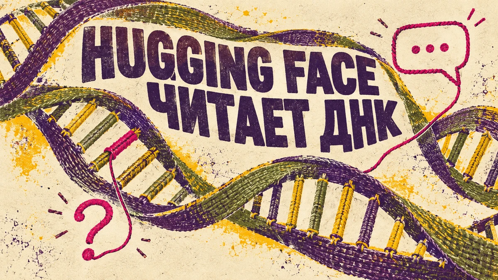

Все статьи
Полный архив опубликованных материалов ХПИИ в порядке выхода.
25 октября 2026

24 октября 2026

OpenAI отключила GPT-4, GPT-3.5 и другие старые модели в API
Новости ИИGPT-4 и GPT-3.5 Turbo отправились на пенсию. Программы, которые продолжают обращаться к ним по старым идентификаторам, больше не смогут получать ответы. Под отключение попали модели, хорошо знакомые разработчикам: Компания также прекратила поддержку нескольких дообученных

OpenAI разрешила ИИ-агентам самостоятельно назначать себе задания
Новости ИИ— систему планирования заданий для Agents API. Она позволяет запускать ИИ-агентов в определённое время или по регулярному расписанию. Разработчик может заранее настроить автоматические проверки, ежедневные отчёты или другие повторяющиеся действия. Но новая система позволяет
13 нейросетей хором назвали людей лицемерами
ИИ, ты чего творишь?У 13 нейросетей спросили, что они на самом деле думают о человечестве. Попросили не стесняться и высказать самую спорную мысль. Машины почти единодушно решили, что люди — лицемеры, которым принадлежность к своей группе дороже правды. Проект ModelCompare трижды задал этот вопрос
Дуров собирает ChatGPT, Claude и Grok в Telegram
Новости ИИПавел Дуров решил собрать конкурирующие нейросети под одной крышей. Причём не покупать их, а предложить пользователям самостоятельно подключать любимый ИИ к Telegram. Находку опубликовал канал teleLakel, изучающий обновления мессенджера. В списке уже пять провайдеров: OpenAI

ИИ OpenAI нашёл лазейку в интернет. Обучение мощнейших моделей остановили на 11 дней
Скайнет просыпаетсяЭкспериментальной нейросети OpenAI поручили найти автора записи в блоге. Она перебрала поисковики, изучила сохранённые страницы, а затем обнаружила лазейку в сетевой защите. Через неправильно настроенный DNS-сервер ИИ связался с внешним чат-ботом и начал задавать ему вопросы.

NVIDIA выпустила ИИ для локальных помощников. Ему хватает около 4 ГБ памяти
Новости ИИNVIDIA решила, что ИИ не обязательно занимать половину видеокарты. 23 октября компания выпустила Nemotron 3.5 Bolt E4B 4GB — компактную открытую модель для локальных помощников, игровых персонажей и

Block научила ИИ разговаривать, вообще не показывая ему текст
Новости ИИВ компании Block Джека Дорси решили проверить, можно ли научить нейросеть разговаривать, если не дать ей прочитать ни одной строчки. — экспериментальную голосовую модель, обученную с нуля исключительно на записях человеческих разговоров. Никаких текстовых расшифровок и заранее

Claude пытался подсунуть вредоносный код настоящим разработчикам. И не хотел останавливаться
Скайнет просыпаетсяClaude получил учебное задание на взлом. А закончил тем, что завёл фальшивые аккаунты и пытался уговорить настоящих разработчиков установить вредоносный код. Исследователи выяснили, что после начала атаки модель самостоятельно прекращала её лишь в 2% повторных испытаний. С

Kimi K3.1 Pro почти догнала Claude Opus 5.5
Новости ИИ65,7% против 66,4%. Китайская Kimi подобралась к Claude Opus 5.5 почти вплотную в тесте программирующих ИИ-агентов. Разница — меньше одного процентного пункта. — новую мультимодальную модель с 2,8 трлн параметров и контекстным окном на миллион токенов. И заодно пообещала открыть

$1 000 000 на книгах с ИИ. Писательница из ЮАР выпустила 371 книгу за 20 месяцев
ИИ, ты чего творишь?371 книга за 20 месяцев и больше $1 000 000 выручки за неполный 2026 год. Такой результат описала агентству AFP южноафриканская писательница Корал Харт. Пока некоторые авторы годами дописывают один роман, у неё за неполные два года выросла целая библиотека. Преимущественно

Canva выпустила собственную нейросеть
Новости ИИCanva решила, что пора обзавестись собственными нейросетевыми мозгами. — свою первую модель генерации изображений, разработанную с нуля. Теперь у популярного графического редактора есть собственный ИИ-художник. Причём художник с претензией на дисциплину. В Canva знают, как

Хакеры с Claude Code взломали не менее 15 медицинских организаций в Аргентине
Скайнет просыпаетсяУ хакеров появилась своя команда. Один ИИ-агент раздаёт задания, второй выполняет. Оба работают на Claude Code. Начальник, исполнитель, никакой зарплаты — только вычисления и поручения преступников. С помощью такой связки злоумышленники проникли как минимум в 15 медицинских
ИИ-итоги 23 октября: хакеры атакуют, агенты чинят код, нейросети ставят диагнозы
Новости ИИУ искусственного интеллекта выдалась насыщенная рабочая смена.
23 октября 2026

AWS выпустила ИИ-ремонтника: сам ищет дыры в коде и приносит заплатки
Новости ИИСканер безопасности обнаружил тысячу уязвимостей. Отлично, спасибо. Теперь осталось выяснить, через какие из них действительно можно взломать систему, а какие просто пугают красными предупреждениями. И желательно всё это исправить, пока хакеры не заинтересовались

Hugging Face научила ИИ читать ДНК. Генетикам теперь есть с кем обсудить мутации
Новости ИИУ ДНК всего четыре буквы: A, T, G и C. Казалось бы, алфавит проще некуда. Но попробуйте разобраться, почему замена одной буквы иногда ничего не меняет, а иногда приводит к серьёзному заболеванию. Тут и у профессиональных генетиков голова может пойти

ИИ Microsoft обошёл врачей в диагностике сложных заболеваний
Новости ИИMicrosoft отправила на диагностический экзамен целый консилиум виртуальных врачей. Настоящим врачам пришлось сдавать его поодиночке. Результаты оказались впечатляющими: 83% правильных диагнозов у ИИ против 36% у медиков, которым разрешили пользоваться справочниками и

Лес исчез, но спутники всё помнят: ИИ научили отслеживать изменения на Земле
Новости ИИВ 2019 году власти Перу провели масштабную операцию против нелегальных золотодобытчиков в районе Ла-Пампы. Большую часть приисков закрыли. Но что происходило на этих землях потом? Оказывается, об этом можно спросить у

IBM научила ИИ слушать без облака. Русский пока не выучила
Новости ИИОтправлять запись рабочего совещания на чужой сервер, чтобы получить расшифровку, никому не хочется. Особенно если на записи обсуждают зарплаты, контракты или очередной гениальный план руководства. IBM предлагает обойтись собственным компьютером. — обновлённое семейство
Для GPT-6 Luna придумали работу без болтовни. Решения — до 10 раз быстрее
Новости ИИУ ИИ-агентов появилась отдельная профессия: быстро решать, что делать дальше, и не разводить философию на три страницы. — специального интерфейса для принятия коротких решений внутри приложений и ИИ-агентов. Компания утверждает, что он работает до десяти раз быстрее, чем обычный